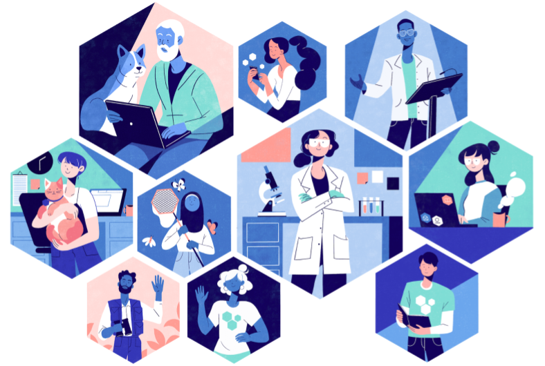
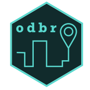
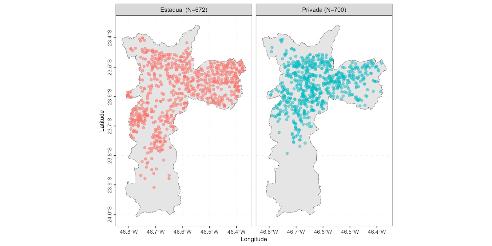

Introdução
No dia 22 de novembro de 2023, a comunidade R-Ladies São Paulo teve a alegria de se reunir no escritório do Airbnb em São Paulo para um evento muito especial: Pacotes em R de Dados Brasileiros. Neste evento, tivemos várias apresentações sobre o tema, que serão abordadas nesse texto.
Além das apresentações, tivemos momentos para networking, onde pudemos conhecer novas pessoas da comunidade, discutir ideias, compartilhar experiências e fortalecer nossos laços. E claro, tudo isso junto a um café maravilhoso, oferecido pelo Airbnb.
Este evento é o resultado da participação da Haydee Svab no programa de Campeãs e Campeões da rOpenSci, apresentando um pouco sobre o programa e também o pacote desenvolvido por ela neste ano.
Nesse post, falaremos um pouco sobre as apresentações realizadas, e também trazendo alguns relatos de pessoas que participaram do evento.

Relatos de participantes
A Bea e a Haydée trouxeram questões importantes para este evento, e para todas as pessoas presentes, principalmente em relação às diferentes bases de dados que temos que trabalhar e as soluções possíveis para realização de consultas e harmonização das bases. Sempre num ambiente acolhedor proporcionado pelas RLadies e pelo Airbnb que foi o anfitrião deste encontro, nós mulheres (em massiva maioria) ganhamos espaço para trocar conhecimento, fazer conexões. Um encontro muito bacana, leve e acolhedor, num ambiente 5 estrelas! (Katia Mine)
Venho participando com frequência dos eventos da R-ladies São Paulo, sinto-me acolhida, em um ambiente harmonioso, com oportunidade para aprendizado e motivação para novos desafios profissionais. (Michele Caramigo)
Apresentações
Boas vindas ao Airbnb, por Angela Valle
Angela foi nossa principal host no Airbnb! Ela fez a abertura do evento, falando um pouco sobre o Airbnb e sua missão: ajudar a construir conexões entre as pessoas e tornar o mundo mais aberto e inclusivo.
“Foi uma experiência muito gratificante e frutífera, adoraria repetir mais vezes e continuar essa colaboração. Apoiar estes encontros, e o trabalho que o grupo R-Ladies realiza ao redor do mundo, alinha com a missão e os valores do Airbnb pois contribui com a promoção da diversidade e inclusão, principalmente na comunidade tecnológica. Dentro do Airbnb nós nos esforçamos para incorporar esses princípios em todos os aspectos das operações da empresa.” - Angela Valle, Airbnb
Conhecendo as R-Ladies São Paulo, por Luana Antunes
A Luana apresentou à comunidade R-Ladies São Paulo pela primeira vez abordando o porquê existimos, qual é o nosso público alvo e, principalmente, deixando o convite para quem quer fazer parte da comunidade e de nossas atividades futuras.
Slides disponíveis em: https://r-ladies-sao-paulo.github.io/2023-11-pacotes-br/slide-rladies.html
rOpenSci e o Programa de Campeões/Campeãs, por Haydee Svab
A Haydee trouxe uma visão empolgante sobre a organização rOpenSci, explicando como essa iniciativa promove a ciência aberta, reprodutível e de qualidade através do uso de dados compartilhados e softwares open-source/livres, em especial com uso de pacotes e ferramentas em R. Ela apresentou o Programa de Campeões/ãs, de que participou ao longo de 2023, com destaque para a atuação de pessoas da América Latina, seja como menores/as ou campões/ãs.

Haydée explicou os objetivos e os critérios de elegibilidade do programa e também destacou a importância da criação da infraestrutura social. ou seja, o fortalecimento da comunidade. Afinal, nos momentos de dificuldade poder contar com mentoria é crucial para o sucesso de um projeto (de pesquisa, do desenvolvimento de pacote, etc).
Slides disponíveis em:
https://hsvab.github.io/2023-11-22-MeetUp-Rladies-SP_ropensci
Pacotes em R de Dados Brasileiros, por Beatriz Milz
Nesta apresentação, iniciamos com alguns conceitos importantes: o que é um pacote? Como conseguimos instalar pacotes? O que são repositórios de pacotes? Como conseguimos instalar pacotes disponíveis em outros repositórios além do CRAN, como o GitHub, e o R-universe. Depois de saber como instalar pacotes, foram citados vários pacotes em R voltados para dados brasileiros. Foi uma ótima oportunidade para destacar como a nossa comunidade está contribuindo de forma significativa para tornar dados locais mais acessíveis, além de destacar a atuação da comunidade brasileira no desenvolvimento de pacotes em R.
Slides disponíveis em: https://r-ladies-sao-paulo.github.io/2023-11-pacotes-br/slide-pacotes-br.html
Introdução ao pacote odbr, por Haydée Svab
A Haydée é consultora, pesquisadora e professora nos temas Mobilidade Urbana, Cidades Inteligentes, Governo Digital e Ciência de Dados. No mestrado, ela utilizou os dados da pesquisa origem-destino realizadas na Região Metropolitana de São Paulo (RMSP), realizando uma análise da evolução dos padrões de deslocamento na RMSP sob uma perspectiva de gênero.
Para facilitar a utilização destes dados por outras pessoas, a Haydée desenvolveu o pacote odbr, durante o programa de Campeãs e Campeões da rOpenSci.

Haydee fez uma introdução ao pacote odbr (Svab et al. 2023), uma ferramenta poderosa que disponibiliza dados de pesquisas origem-destino no Brasil. Ela apresentou as 3 principais funções do pacote: read_od() para obtenção dos dados tabulares, read_map() para obtenção dos mapas e o read_dictionary() para obtenção dos dicionários de dados, que estarão disponíveis em 3 línguas: português, inglês e espanhol. Sua apresentação também mostrou como foi o processo de desenvolver um pacote pela primeira vez, quais foram suas dificuldades no desenvolvimento e disponibilização no CRAN.
O pacote odbr está disponível no CRAN, podendo ser instalado utilizando o seguinte comando: install.packages("odbr")
Slides disponíveis em: https://hsvab.github.io/2023-11-22-MeetUp-Rladies-SP_odbr/
Introdução ao pacote geobr, por Beatriz Milz
A última apresentação foi uma introdução super rápida ao geobr (Pereira et al. 2023), um pacote que facilita o acesso a dados públicos geoespaciais do Brasil. Focamos em entender como descobrir quais são os dados disponíveis no geobr, e como podemos começar a visualizar esses dados usando o pacote ggplot2. Fizemos um exemplo incremental de um mapa usando apenas dados obtidos no geobr, buscando explorar como estão especializadas as escolas que oferecem o ensino médio no município de São Paulo. Todos os códigos estão disponíveis no slide.

Slides disponíveis em: https://r-ladies-sao-paulo.github.io/2023-11-pacotes-br/slide-geobr.html
Apoio
Agradecemos imensamente ao apoio do Airbnb, a RConsortium, e a rOpenSci, que tornaram este evento possível:
Airbnb: apoio ao evento cedendo o espaço e oferecendo um maravilhoso coffee, durante todo o evento. Agradecemos imensamente a Angela Valle, por realizar a ponte entre a R-Ladies São Paulo e o Airbnb, e conseguindo o apoio do espaço e do coffee break.
RConsortium: apoio financeiro que viabilizou custear os auxílios de transporte para as pessoas que solicitaram, além das camisetas usadas pela equipe e que também foram sorteadas!
rOpenSci: como citado anteriormente, este evento é resultado da participação da Haydée Svab no programa de Campeãs e Campeões. Agradecemos a organização e, em especial, Yanina Bellini e às pessoas participantes do programa!
Convite
Não deixem de seguir a R-Ladies São Paulo em nossas redes sociais e se juntar ao nosso grupo no Telegram. Até o próximo encontro!
Autoria
Post escrito colaborativamente por: